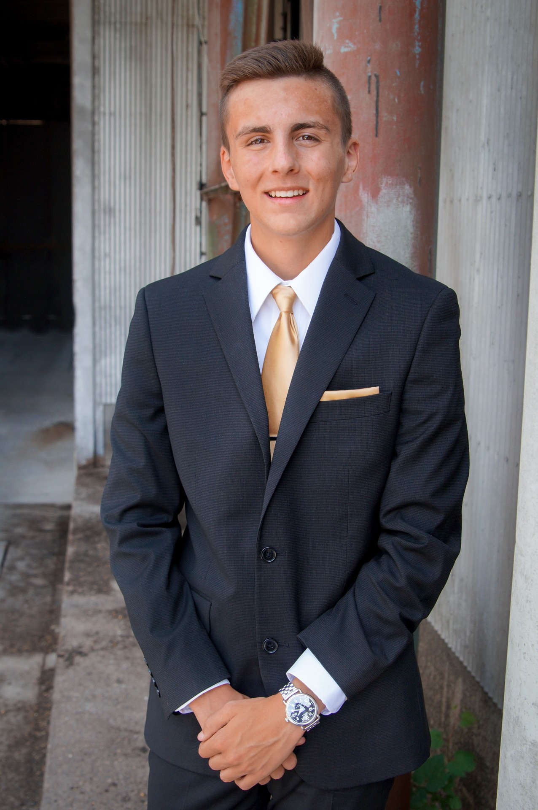

Hello, my name is Matthew Condon...
Here are some quick facts about myself. I have spent my whole life in Minnesota. I am currently a senior at Rosemount High School, located in Rosemount, Minnesota. I live at home with my mother and dachshund. My older brother is in the United States Coast
Guard. My favorite subjects in school are Computer Science and Mathematics.
I am involved in a wide array of activities, both in and out of school. For athletics, I am involved in Cross Country and Track & Field. For arts, I am participate in Speech and Debate. I am a member of Student Council and an officer for National Honor Society. I am also heavily involved in Scouting.
Coincidentally, even though Computer Science is my favorite subject, I did not begin learning it until my junior year of high school. I had known the Computer Science teacher since my freshman year and he had been convincing me to take the course for two years. I eventually decided to take A.P. Computer Science A and moved into Advanced Computer Science.
